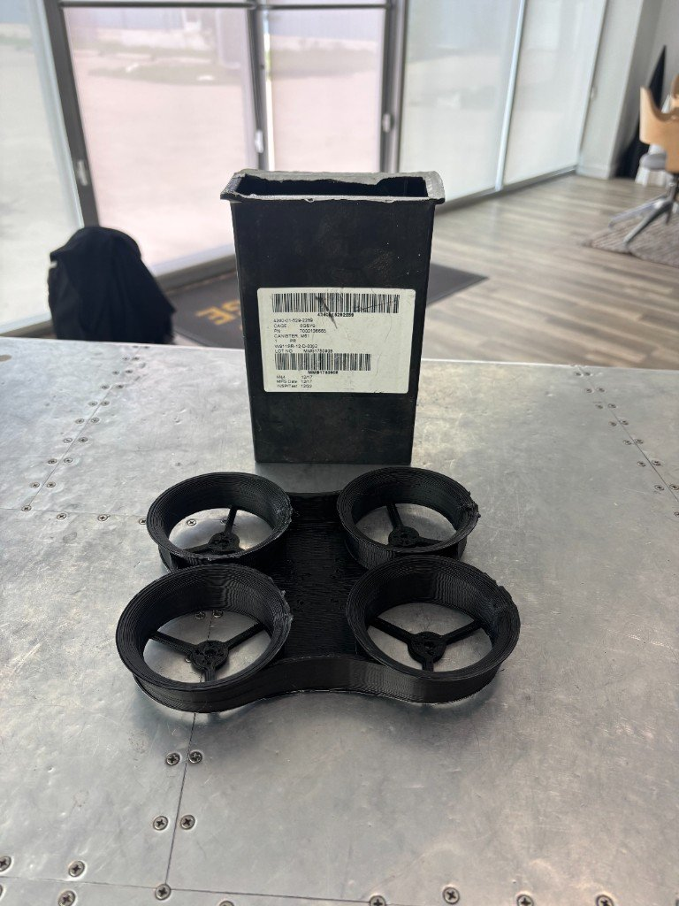
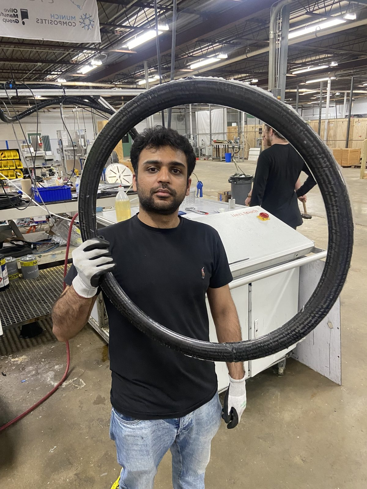
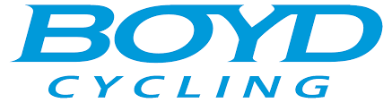
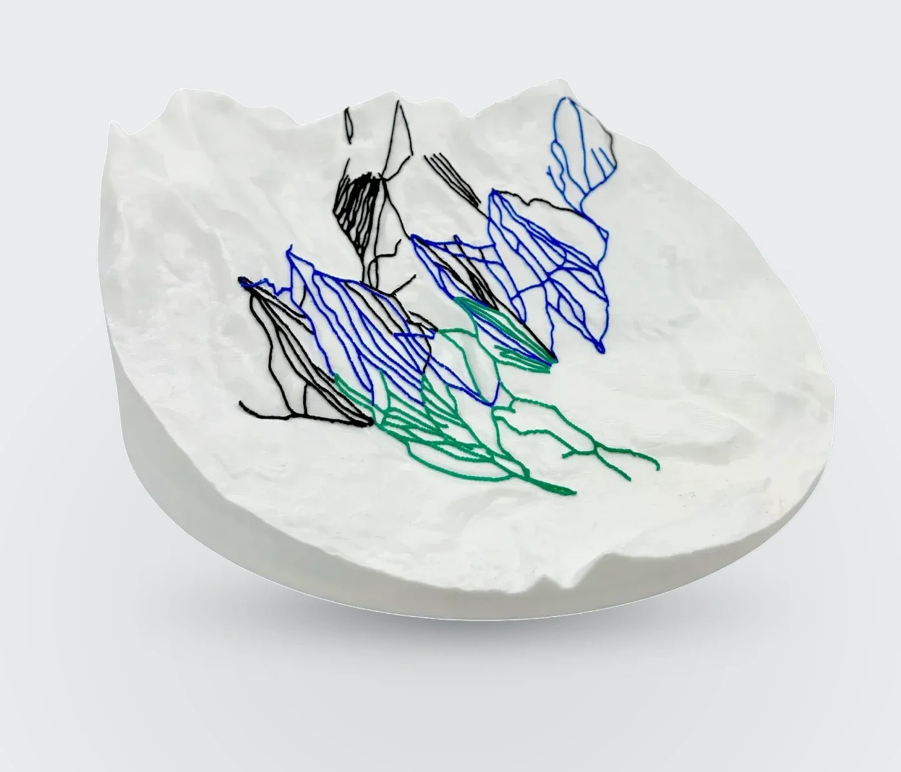
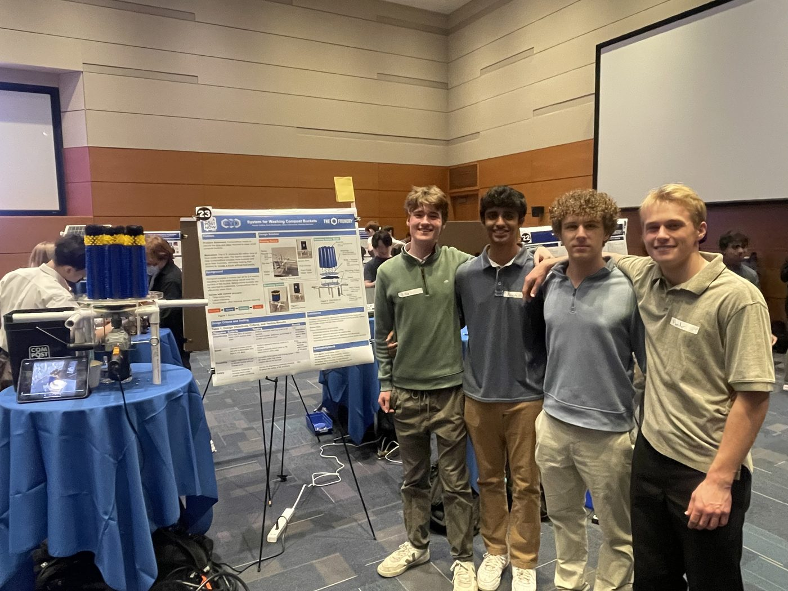

Mechanical engineering / Duke University
Westley
Kleinman.
Mechanical systems. Product software.
I build across the shop floor and the screen — from composite tooling and recycled-polymer printing to products people can use.

Featured work / Re:3DWaste feedstock → flight-ready geometryExplore the case study ↗ Explore the orbital navigation ↓Work Experience
Industry R&D and process engineering roles in additive manufacturing and composites
rPP FGF Printing — Re:3D
- Challenge
- Turn used filter canisters into printable rPP.
- Contribution
- Developed the reclamation process, printed and validated a drone frame, restored BlackBot, and designed a beacon mount.
- Result
- 139.7 g final frame; beacon mount designed into production.

Boyd Cycling Internship

- Challenge
- Validate carbon rims and address RTM resin-flow defects.
- Contribution
- Built an impact rig in 72 hours and revised mold geometry.
- Result
- 40 J UCI validation with headroom to 200 J; a path toward more consistent rims.
Projects
Venture builds, design coursework, leadership software, and game experiments outside formal internships

Monte
- Challenge
- Turn terrain and trail data into physical maps people can buy.
- Contribution
- Built the storefront, live 3D preview, and GIS-to-STL production pipeline.
- Result
- Monte is a live direct-to-consumer brand at monte3d.com.

Bucket Washing Mechanism
- Challenge
- CompostNow needed a faster way to clean buckets.
- Contribution
- Led testing for a two-device rinse-and-brush system.
- Result
- 43% less cleaning time; operators reduced from four to one.
Duke Club Cycling
- Challenge
- Club rides and race information were scattered.
- Contribution
- Led the club and built DukeCycling.dev as a shared hub.
- Result
- Supported ride planning and member resources during my term.
AI Side Quests
- Challenge
- Explore game mechanics in small, playful builds.
- Contribution
- Made a blackjack trainer and Lantern Kart Rally.
- Result
- Blackjack plays online; the kart racer runs locally.
Background
Design, manufacturing, and shipping products
At Duke
B.S. Mechanical Engineering with an Innovation & Entrepreneurship certificate, expected May 2028 (3.88 GPA). Focus: CAD-to-shop execution, process data, and product software that supports physical goods.
How I Work
Start from the constraint - 72 hours for a test rig, resin flow defects in RTM, contaminated waste plastic that has to become printable feedstock - then build and validate against a measurable outcome.
Experience
Re:3D (rPP reclamation and FGF process development); Time Bicycles & Boyd Cycling (RTM + impact testing); Monte founder (monte3d.com); Duke Club Cycling president (DukeCycling.dev). Shop floor, full-stack product, and team ops.
Duke University
B.S. Mechanical Engineering + Innovation & Entrepreneurship Certificate · 3.88 GPA · expected May 2028
Re:3D - R&D Engineering Intern
rPP reclamation and FGF print process development on large-format printers · Austin, TX
Duke Club Cycling - President / Lead Safety Officer
Executive planning and safety operations with development pathways for entry-level riders; built DukeCycling.dev
Time Bicycles / Boyd Cycling - Process Optimization & Test Engineering Intern
RTM mold overhaul and a custom wheel-impact rig validated to the 40 J UCI standard · Greenville, SC
EGR 101 - Bucket Washing System, Lead Test Engineer
CompostNow cleaning system with a four-person team; cut cleaning time 43% and operators from four to one
MaccabiUSA Pan-American Athlete
One of three athletes selected to represent MaccabiUSA in road cycling at the Pan-American Games in Buenos Aires
Monte - Founder
monte3d.com - Next.js / Three.js e-commerce for 3D-printed trail maps; GIS-to-STL production pipeline
CyberPatriot - Team Founder, 3x State Champion
Founded a high school cybersecurity program and built training for 15+ members across three teams
NICA Arkansas League
High school mountain biking
Get In Touch
Open to engineering internships and collaborations.